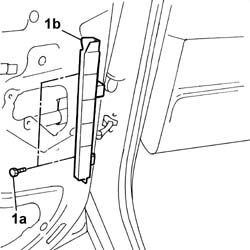
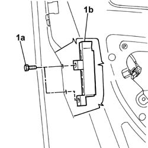
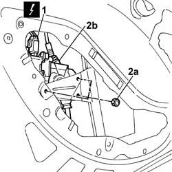
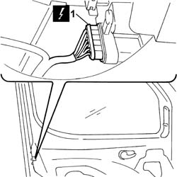
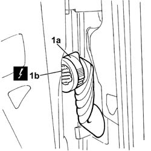
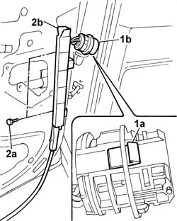
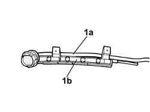

7005D22 front side door descending window glass guide (one) - r r with door panel (and support frame) removed
- Path
- Procedures > 70 FITTINGS > 7005 PASSENGER COMPARTMENT FRONT SIDE DOORS > 7005D front side door window glasses > 7005D22 front side door descending window glass guide (one) - r r with door panel (and support frame) removed
- Kind
- repair procedure (removal / refitting; the operation number is the code)
- Applies to
- all engines; all production periods
- Interactive page
- https://sloeber94.github.io/elrnDB-fDbl/en/#/2585004
Applies to: all engines; all production periods
 Removing
Removing
 Refitting
RefittingOp. 7005A04 FRONT SIDE DOOR WATER GUARD PROTECTION - R.R. OR POSITION WITH DOOR PANEL REMOVED
Close the window fully.
1. Undo the fixing bolts (1a) on the bodywork nd remove the front window guide (1b).

Applies to: all engines; all production periods
1. Undo the bolts (1a) and remove the window rear guide (1b).

Applies to: all engines; all production periods
Refitting
RemovingFit the window rear guide and fix it with the bolts.
Position the window front guide and fix it with the bolts to the bodywork.
Op. 7005A04 FRONT SIDE DOOR WATER GUARD PROTECTION - R.R. OR POSITION WITH DOOR PANEL REMOVED
Applies to: all engines; all production periods; only with equipment: Electric front windows and Cargo trim level
Removing
RefittingOp. 7005A04 FRONT SIDE DOOR WATER GUARD PROTECTION - R.R. OR POSITION WITH DOOR PANEL REMOVED
Applies to: all engines; all production periods; only with equipment: Electric front windows
1. Disconnect the electrical connector of the front electric window motor.
Name | Connector | |
|---|---|---|
1 | Front left electric window motor |
Name | Connector | |
|---|---|---|
1 | Front right electric window motor | See N61 FRONT RIGHT ELECTRIC WINDOW MOTOR ( FRONT PASSENGER DOOR ) |
2. Undo the fixing nuts (2a) and move the electric window motor (2b) aside.

Applies to: all engines; all production periods; only with equipment: Electric front windows
1. Disconnect the electrical connector for the front door locking gearmotor.
Name | Connector | |
|---|---|---|
1 | Left front door lock geared motor |
Name | Connector | |
|---|---|---|
1 | Right front door lock geared motor |

Applies to: all engines; all production periods; only with equipment: Electric front windows
1. Raise the lever (1a) and disconnect the electrical connector (1b).
 | Name | Connector |
|---|---|---|
1b | Front left door connection |
| Name | Connector |
|---|---|---|
1b | Front right door connection |

Applies to: all engines; all production periods; only with equipment: Electric front windows
1. Release the lug (1a) and remove the connector (1b) from its seating.
2. Undo the fixing bolts (2a) on the bodywork and remove the window front guide (2b).

Applies to: all engines; all production periods; only with equipment: Electric front windows
Release the wiring loom from the retaining bands and remove the front guide complete with door electrical wiring.
1. Undo the bolts (1a) and remove the window rear guide (1b).
Applies to: all engines; all production periods; only with equipment: Electric front windows
1. At the bench, separate the wiring loom (1a) from the window front guide (1b).

Applies to: all engines; all production periods; only with equipment: Electric front windows
Refitting
RemovingUsing new retaining bands, secure the door electrical wiring to the window front guide.
Fit the window rear guide and secure it with its bolts.
Position the front guide complete with door wiring and secure it with the bolts to the bodywork.
Fit the door electrical connector in its seating.
Secure the door electrical wiring to the retaining bands.
Connect the electrical connectors for the electric window motor and front door locking gearmotor.
| Name | Connector |
|---|---|---|
- | Front left electric window motor |
| Name | Connector |
|---|---|---|
- | Front right electric window motor | See N61 FRONT RIGHT ELECTRIC WINDOW MOTOR ( FRONT PASSENGER DOOR ) |
| Name | Connector |
|---|---|---|
- | Left front door lock geared motor |
| Name | Connector |
|---|---|---|
- | Right front door lock geared motor |
Connect the electrical connector for the front door.
| Name | Connector |
|---|---|---|
- | Front left door connection |
| Name | Connector |
|---|---|---|
- | Front right door connection |
Applies to: all engines; all production periods; only with equipment: Electric front windows and Cargo trim level
Op. 7005A04 FRONT SIDE DOOR WATER GUARD PROTECTION - R.R. OR POSITION WITH DOOR PANEL REMOVED
Topics linked from this page (7)
- 7005A04 front side door water guard protection - r r or replace with door panel removed
- D30 FRONT LEFT DOOR CONNECTION
- D031 REAR/PASSENGER FRONT DOOR COUPLING
- N50 LEFT FRONT DOOR LOCK GEARED MOTOR
- N051 PASSENGER FRONT DOOR LOCK GEARED MOTOR
- N060 DRIVER'S FRONT DOOR ELECTRIC WINDOW MOTOR
- N61 FRONT RIGHT ELECTRIC WINDOW MOTOR ( FRONT PASSENGER DOOR )